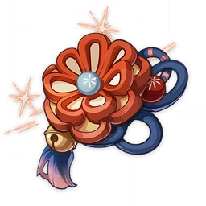

Arataki Itto
(Main DPS)

Armas:
Armas 4★ :

Espinha Dorsal da Serpente
Taxa CRÍT

Sombra Branca
DEF

Foice do Penhasco Obscuro
Dano CRÍT
Armas 5★ :

Chifres Vermelhos Destruidores de Pedras
Dano CRÍT

Espadão Celestial
Recarga de Energia
Artefatos:
BEST

Casca de Sonhos Opulentos
Conjunto de 4 peças

Meteoro Invertido
Conjunto de 4 peças
Prioridade nos status dos artefatos:

Areia do Tempo:
DEF
Substatus:
Taxa CRÍT · Dano CRÍT · Recarga de Energia

Cálice de Eratema:
Bônus de Dano Geo
Substatus:
Taxa CRÍT · Dano CRÍT · DEF% · Recarga de Energia

Tiara de Logos:
Taxa CRÍT · Dano CRÍT
Substatus:
Taxa CRÍT · Dano CRÍT · DEF% · Recarga de Energia
Prioridade dos talentos:
Lenda do Combate
Ataque Normal
>
Descendência Real: Contemplem, Itto o Maligno!
Burst Elemental
>